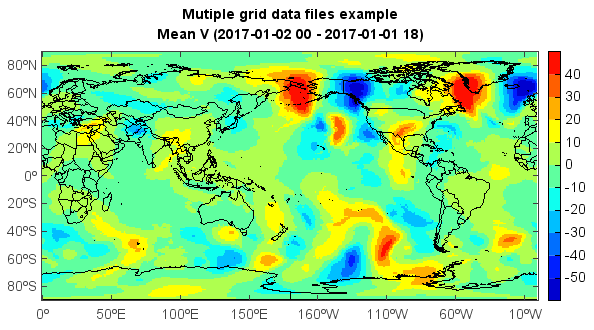

addfiles¶
- mipylib.dataset.midata.addfiles(fnames)¶
Open multiple data files.
- Parameters:
fnames – (list of string) Data file names to be opened.
- Returns:
(DimDataFiles) DimDataFiles object.
Examples
datadir = 'D:/Temp/grib' st = datetime.datetime(2017,1,1,0) et = datetime.datetime(2017,1,1,18) fns = [] while st <= et: fn = os.path.join(datadir, 'fnl_' + st.strftime('%Y%m%d_%H') + \ '_00.grib2') print fn fns.append(fn) st = st + datetime.timedelta(hours=6) fs = addfiles(fns) v = fs['v-component_of_wind_tropopause'] data = v[:,:,:] ndata = mean(data, axis=0) #Plot axesm() lworld = shaperead('D:/Temp/map/country1.shp') geoshow(lworld, edgecolor='k') layer = imshowm(ndata) colorbar(layer) title('Mutiple grid data files example\nMean V (' + st.strftime('%Y-%m-%d %H') + ' - ' + \ et.strftime('%Y-%m-%d %H') + ')')
